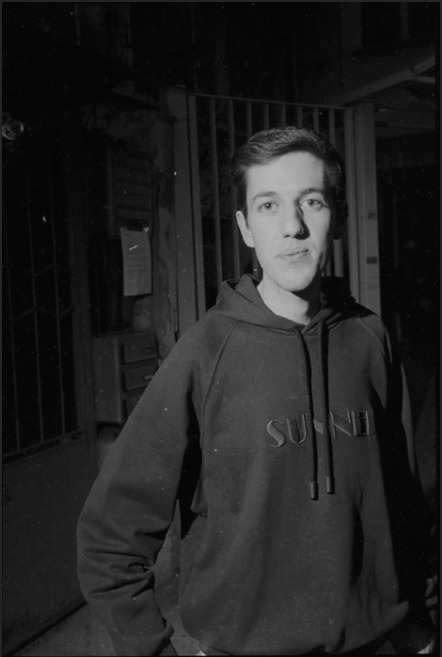

Nato nel 1999 a Rimini e milanese di adozione, ho scoperto la passione per la modellistica e la sartoria durante gli studi in fashion design. Ho specializzato la mia formazione nella modellistica per abbigliamento donna, approfondendo sia la creazione manuale dei modelli su carta che l'uso dei programmi CAD. Sono sempre aperto a nuovi apprendimenti.
Diploma in Fashion Design, IED Milano - aprile 2022
Diploma in Modellistica Donna, Istituto Secoli Milano - luglio 2023